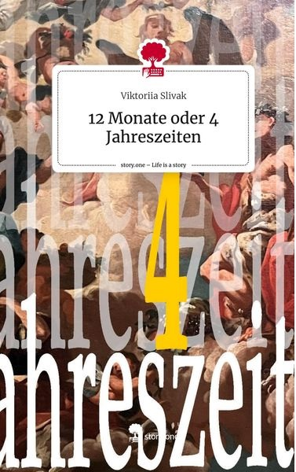

|  |
ОписаниеЭта книга определенно не является произведением искусства. Я прекрасно осознаю свои сильные стороны, и письмо (причем на немецком языке) определенно не входит в их число. Этот блокнот — результат моей самотерапии после самого болезненного разрыва в моей жизни. Продукт бессонных ночей и ежедневных слез. Я писала, чтобы выжить, а не вырваться вперед. Книга никогда не была моей целью, а всего лишь выходом из тени, чтобы не потерять свет жизни. И мне это удалось:) ПодробностиИздание в твердом переплете Дата публикации: 25 сентября 2023 г. Издатель Издательство Story.one Язык: Немецкий ISBN 978-3-7108-8671-3 |